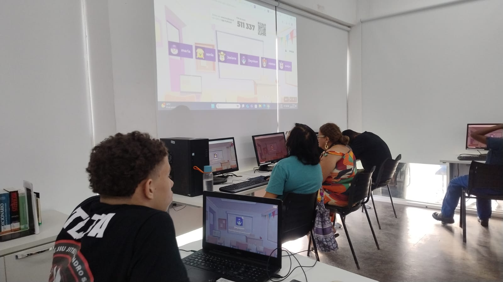
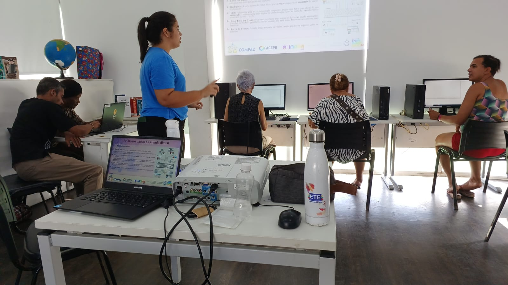
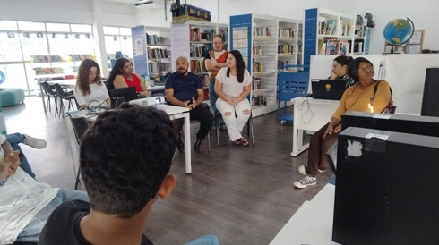

Impacto e Inovação: A Força Interdisciplinar dos Bolsistas do Projeto
O foco principal do projeto desenvolvido no COMPAZ foi a promoção do conhecimento como instrumento de transformação social e o desenvolvimento de habilidades profissionais com aplicabilidade prática estruturada pela teoria.
Objetivo do Projeto
O foco principal do projeto desenvolvido no COMPAZ foi a promoção do conhecimento como instrumento de transformação social e o desenvolvimento de habilidades profissionais com aplicabilidade na prática estruturada pela teoria.
Durante as ações, foram abordados conteúdos programáticos voltados ao letramento digital, à internet das coisas, à inteligência artificial e à valorização das competências técnicas e comportamentais.
Foram aplicadas diversas dinâmicas interativas que estimularam o trabalho em equipe, a comunicação e a reflexão sobre os desafios das ferramentas digitais, tornando o aprendizado mais dinâmico e participativo.
Equipe de Bolsistas
O projeto contou com a participação e cooperação de nove bolsistas — Andryene, Carlos Henrique, Glébson, Jaquelyne, Júlio, Leonardo, Rayane, Ruth e Valmir — de cursos distintos: Administração, Design Gráfico, Logística, Tradução e Interpretação de Libras e Desenvolvimento de Sistemas.
Essa diversidade de formações enriqueceu o processo, permitindo a pluralidade de conhecimento, a troca de saberes e experiências, o que resultou em ações interdisciplinares relevantes aplicáveis ao que fora proposto pelo projeto.
Participação e Receptividade
A receptividade positiva do COMPAZ foi um diferencial extremamente importante para o bom desenvolvimento das ações e atividades, bem como para o desempenho dos bolsistas.
O público participante demonstrou interesse e se envolveu nas atividades, participando com entusiasmo, curiosidade e partilha de seus conhecimentos prévios e vivências do cotidiano.
Os alunos acolheram o projeto com respeito e disposição para aprender, o que contribuiu para um ambiente de aprendizado colaborativo e inspirador.

Desafios e Estratégias
Durante o desenvolvimento das atividades, foi necessário superar alguns desafios que surgiram, o que requereu a adaptação dos conteúdos à realidade dos participantes, de acordo com cada especificidade e peculiaridade de cada turma.
Isso foi fruto do engajamento e sensibilidade dos bolsistas em perceber as necessidades dos alunos e seus níveis de aprendizagem. Desafios que foram superados com paciência, uso de estratégias e ferramentas pedagógicas adequadas num conjunto de metodologias criativas.
Considerações Finais
O projeto desenvolvido no COMPAZ evidenciou a força da atuação interdisciplinar dos bolsistas, mostrando que a combinação de diferentes formações amplia a qualidade das ações e potencializa o impacto social das atividades realizadas.
A participação ativa do público, somada ao engajamento dos bolsistas, resultou em um ambiente de aprendizado colaborativo, dinâmico e acolhedor. Essa troca de conhecimentos reforçou o valor da educação como instrumento de transformação social.